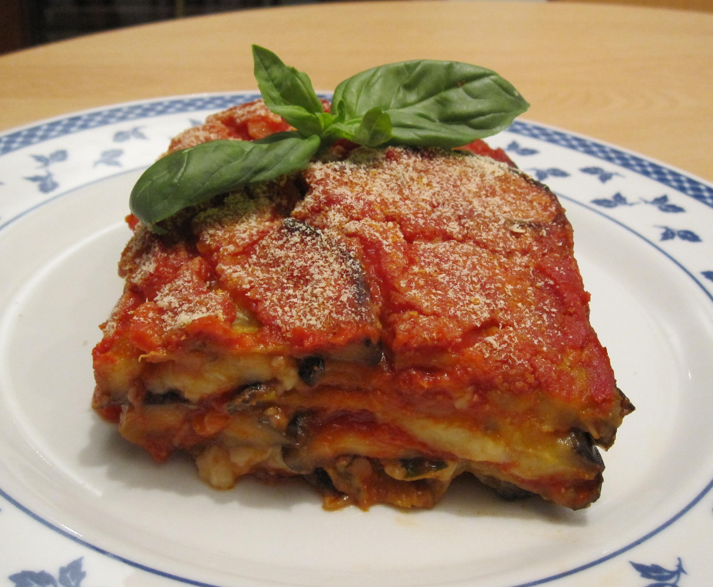

Eggplant Parmigiana Caponata

Description
I made this recipe to combine the tastes of eggplant parmesan and caponata, an Italian eggplant appetizer.
It is quite rich and uses a lot of olive oil. It is best served with linguini or some other kind of pasta on the side. It is a bit sweet and a bit salty with a nice texture.
Ingredients
- 1 cup olive oil, divided
- 1 eggplant, sliced into 1/2 inch rounds
- 2 red bell peppers, chopped
- 8 slices mozzarella cheese
- 1 small onion, chopped
- 2 cloves garlic, minced
- 1 (16 ounce) can stewed tomatoes, with juice
- 1 tablespoon chopped fresh basil
- 1 tablespoon chopped fresh oregano
- ¼ cup balsamic vinegar
- ¼ cup red wine vinegar
- ½ cup brown sugar
- 8 tablespoons tomato paste
- 3 tablespoons capers, chopped
- 1 teaspoon salt
- 1 teaspoon ground black pepper
- 1 cup grated Parmesan cheese
Steps
- Preheat oven to 350 degrees F (175 degrees C).
- Heat 1/2 cup olive oil in a large heavy skillet. Saute eggplant until each piece becomes saturated with oil. Use eggplant to line the bottom of a 3 quart casserole dish. Saute the red peppers until tender, and layer over eggplant in casserole dish. Top with mozzarella.
- Heat remaining olive oil, and cook onions and garlic until lightly browned and caramelized. Stir in stewed tomatoes, basil, and oregano and simmer 5 minutes. Add balsamic vinegar, red wine vinegar, brown sugar, and tomato paste. Simmer for 10 minutes. Add capers. Season with salt and pepper. Pour over the mozzarella cheese in the casserole dish. Sprinkle Parmesan cheese on top of sauce.
- Bake in preheated oven for 20 to 25 minutes, or until cheese is melted.